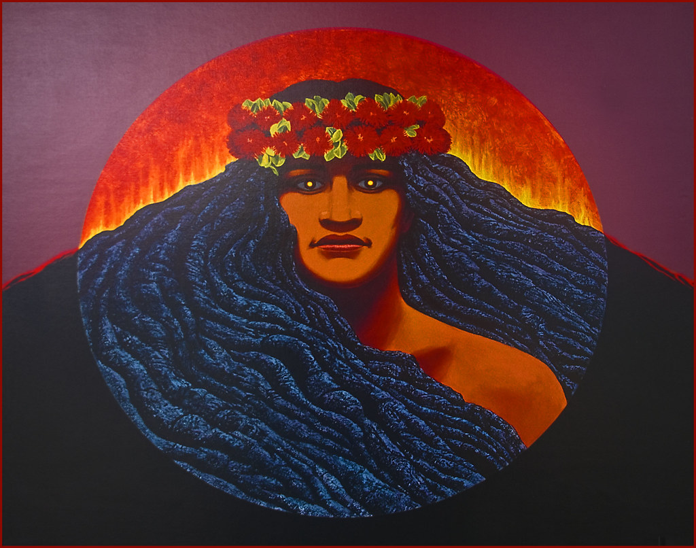
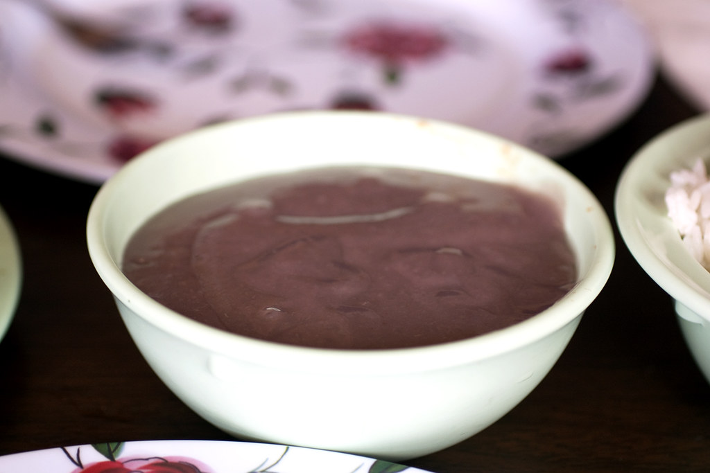
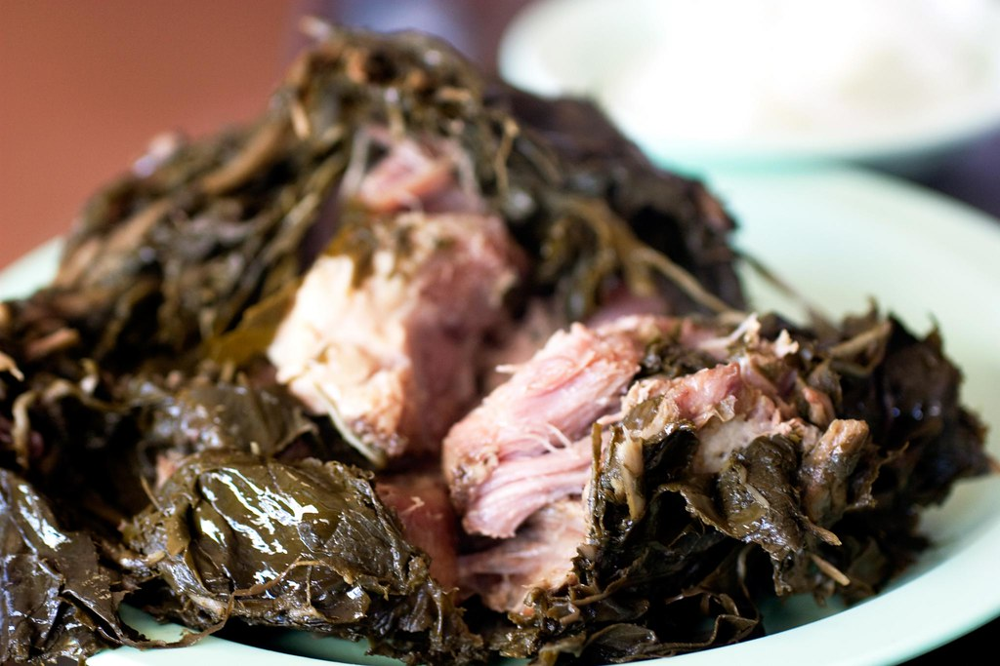

Life as a Native Hawaiian
For many native Hawaiians, life is intricately connected to the land, or 'aina. The 'aina is not simply a resource to be used for material gain, but a source of identity and spirituality that is central to the culture and way of life of the Hawaiian people. Despite this deep connection to the land, however, many native Hawaiians have faced significant challenges over the years.

The overthrow of the Hawaiian monarchy in 1893, the annexation of Hawaii by the United States in 1898, and the subsequent displacement of many native Hawaiians from their land have all had a profound impact on the community. Today, native Hawaiians continue to face a range of social and economic issues, including high rates of poverty, poor health outcomes, and a lack of affordable housing. Despite these challenges, however, many native Hawaiians are working to revitalize their cultural traditions and to build stronger communities that are rooted in a deep sense of connection to the land and to each other.
Myths of Hawai'i
Hawaiian mythology is a rich and complex system of beliefs that has been passed down through generations of the kanaka maoli, the native Hawaiian people. The mythology is based on a pantheon of gods and goddesses, demigods, and supernatural beings that have played significant roles in Hawaiian culture, history, and everyday life
Some of the most well-known figures in Hawaiian mythology include:
Pele:
the goddess of volcanoes, fire, and lightning who is said to reside in Kilauea, the active volcano on the Big Island of Hawaii.
Maui:
a mischievous demigod who possessed supernatural powers and performed many heroic feats, including slowing down the sun and capturing the goddess of fire.
Kamapua'a:
a pig demigod who had the ability to change his shape and control the weather.
Hina:
a goddess of the moon, who is associated with fertility and childbirth.
Hawaiian mythology also includes numerous stories about creation, the afterlife, and the origins of the islands themselves. Many of these myths are intertwined with Hawaiian history, culture, and daily life, and continue to be passed down through oral tradition and cultural practices.
Traditional Hawaiian Cuisine
Hawaiian cuisine is a fusion of flavors and ingredients from the many cultures that have come together in the islands over the centuries. Some of the most iconic and beloved dishes are those that are uniquely Hawaiian, born out of the islands' rich culinary traditions.
Poi
Poi is a staple of Hawaiian cuisine, made from taro root that is cooked and mashed to a smooth consistency. It has a slightly sour and nutty flavor and is often served as a side dish with other foods.
Laulau
Laulau is a traditional Hawaiian dish that consists of pork, fish, or chicken wrapped in taro leaves and cooked in an underground oven called an imu. The result is a tender and flavorful dish that is often served with rice or poi.

Kalua Pig
Kalua pig is another popular dish that is typically served at luau feasts and other special occasions. It is made by slow-roasting a whole pig in an imu until the meat is tender and falls off the bone. The result is a rich and flavorful meat that is often served with cabbage or other vegetables.